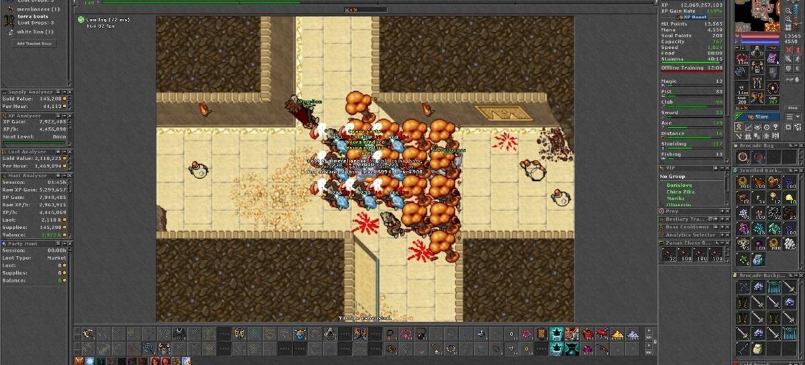

TOP 10 JOGOS RETRÔ
Tetris
Resident Evil 4
Street Fighter II
Pac-Man
Super Mario World
Team Fortress 2
Super Mario 64
Tibia
Final Fantasy VII
Ragnarok Online
Tibia

Tibia é um jogo eletrônico de RPG multijogador (MMORPG) gratuito,
desenvolvido pela CipSoft. Criado em 1997, é um dos jogos mais antigos
do gênero. Nele, os jogadores podem desenvolver as habilidades de seus
personagens, buscar tesouros, resolver enigmas e explorar áreas como
cidades, masmorras, florestas, desertos, ilhas, praias, minas, etc. Os
personagens podem disputar lutas entre si ou com criaturas, tais como
monstros, dragões, demônios, orcs, utilizando armas e magias, enquanto
os NPCs não podem ser atacados.
Ao iniciar o jogo, o seu avatar começa na ilha de Dawnport, uma ilha
onde todo jogador deve permanecer até desenvolver habilidades
necessárias para o progresso e sobrevivência nos outros mapas do jogo.
Quando o jogador atinge o nível 8, ele pode, opcionalmente, escolher a
sua vocação e deixar a ilha. Em Dawnport, o jogador familiariza-se com
o jogo e aprende muitas coisas sobre o mundo de Tibia, como magia ou
usar flechas e espadas.
O jogo foi desenvolvido utilizando a linguagem de programação C++ em
ambas versões de Windows e GNU/Linux.